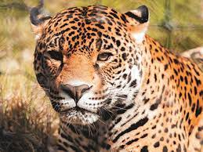

¡Bienvenido!
Bienvenido al colegio de bachilleres plantel cancún. En esta escuela existe el compromiso y la disciplina. no lo dudes y se parte de esta gran familia de jaguares
Propósito
Formar ciudadanos competentes para realizar actividades propias de su momento y condición científica, tecnológica, histórica, social, económica, política y filosófica, con un nivel de dominio que les permita movilizar y utilizar, de manera integral y satisfactoria, conocimientos, habilidades, destrezas y actitudes
El Colegio de Bachilleres del Estado de Quintana Roo es una institución líder a nivel estatal en educación media superior, reconocida por su calidad educativa, con una oferta diversificada que responde a las necesidades de la sociedad, con docentes y directivos competentes e infraestructura y servicios educativos pertinentes. Se encarga de formar integralmente a sus estudiantes bajo el enfoque de competencias, preparándolos para la vida, el mercado laboral y la educación superior, con los principios de calidad, equidad, inclusión, transparencia y rendición de cuentas.